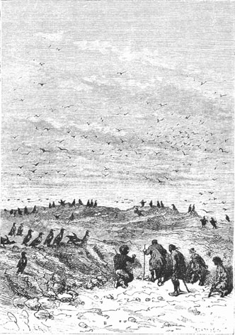
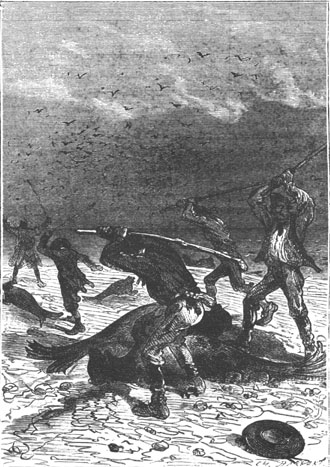
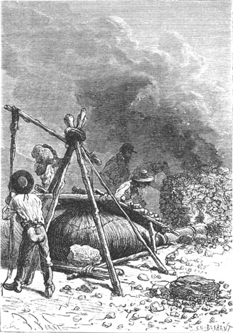

The next day, April 17th, the sailor’s first words were directed to Gideon Spilett.
“Well sir,” he asked him, “what shall we do today?”
“Whatever pleases Cyrus,” replied the reporter.
Until then they had been brickmakers and potters. Now the engineer’s companions would become metallurgists.
The previous day, after lunch, the exploration had been carried to the point of Cape Mandible, nearly seven miles distant from the Chimneys. There the long series of dunes was ended and the soil took on a volcanic appearance. There were no longer any high walls such as Grand View Plateau but an outlandish and capricious border which surrounded the narrow gulf between the two capes, formed by mineral material vomited from the volcano. Arriving at this point the colonists retraced their steps and as night was falling they again entered the Chimneys. They did not go to sleep before definitely resolving the question of whether they should quit Lincoln Island or not.
The twelve hundred miles which separated the island from the Tuamotu archipelago was a considerable distance. A boat would not be sufficient to cross it especially with the bad season coming on. Pencroff had expressly said so. Now to construct a simple boat, even having the necessary tools, was a difficult task and, the colonists not having any tools, they would have to begin by making hammers, axes, adzes, saws, augers, planes, etc. which would take time. It was therefore decided that they would winter on Lincoln Island and that they would find a dwelling more comfortable than the Chimneys to pass the winter months.
First they would proceed to utilize the iron ore, of which the engineer had noted several beds in the northwest part of the island, and to change this mineral into iron or into steel.
Soil does not generally contain metals in the pure state. For the most part they are found combined with oxygen or with sulphur. In particular, of the two specimens brought back by Cyrus Smith, one was magnetic iron, not carbonated, the other pyrites, otherwise known as ferric sulphide. It was thus the first, the iron oxide, that he would have to reduce with carbon, that is to say to remove the oxygen in order to obtain a pure state. This reduction is done by subjecting the mineral to a high temperature in the presence of carbon, either by the rapid and easy “Catalan Method” which has the advantage of directly transforming the mineral into iron in a single operation, or by the blast furnace method, which first changes the mineral into cast iron, then the cast iron into iron by raising the amount of carbon combined with it to three or four percent.
Now what was it that Cyrus Smith needed? It was iron and not cast iron and he had to look for the most rapid method of reduction. Besides, the mineral that he had collected was by itself very pure and very rich. It was the ferrous oxide which is encountered in jumbled aggregates of a deep grey, giving a black dust crystallized in regular octahedrons. It makes natural lodestones and is used in Europe to make ferrous products of the highest quality. Sweden and Norway are abundantly provided with it. Not far from this bed were found the coal seams already exploited by the colonists. There the treatment of the mineral would be facilitated since the fabrication elements would be near each other. This is the same situation that makes for the lavish wealth of the United Kingdom where the coal and the metal are extracted from the same soil and at the same time.
“Then, Mister Cyrus,” Pencroff said to him, “we will work the iron ore.”
“Yes, my friend,” replied the engineer, “and for that—this will not displease you—we will begin with a seal hunt on the islet.”
“A seal hunt!” cried the sailor, turning toward Gideon Spilett, “Is a seal needed to make iron?”
“Since Cyrus has said so,” replied the reporter.
But the engineer had already left the Chimneys and Pencroff prepared for the seal hunt without having obtained any other explanation.
Soon Cyrus Smith, Herbert, Gideon Spilett, Neb and the sailor had gathered on the shore at the point where the channel permitted a sort of fordable passage at low tide. The sea was then at low tide and the hunters could cross the channel without wetting themselves above the knees.
Cyrus Smith then set foot on the islet for the first time and his companions for the second time since it was there that the balloon had thrown them at the beginning.
At their arrival, a few hundred auks looked at them guilelessly. The colonists, armed with clubs, could have easily killed them but they would not dream of committing such a doubly useless massacre, because it was important not to frighten the amphibians who were lying on the sand several cable lengths away. They also respected certain innocent penguins whose wings, reduced to the state of stumps, were flattened in the form of fins and trimmed with feathers of a scaly appearance.
The colonists therefore advanced prudently toward the north point, walking on soil riddled with small holes which formed the nests of aquatic birds. Near the extremity of the islet appeared large black specks floating on the level of the water. One could say they were the tops of rocks in motion.

The colonists advanced prudently.
They were the amphibians to be captured. It was necessary to let them land because with their narrow pelvis, their close-cropped hair, and their slender shape, these seals, who were excellent swimmers, would be difficult to capture in the sea whereas on land their short webbed feet allowed them only a not very rapid crawling movement.
Pencroff knew the habits of these amphibians and he advised waiting until they had stretched out on the sand under the rays of the sun which would not be long in putting them to sleep. They would then maneuver to cut off their retreat and to knock them on the nostrils.
The hunters thus concealed themselves behind the rocks on the shore and they waited silently.
An hour passed before the seals came to frolic on the sand. They could count half a dozen. Pencroff and Herbert then broke off in order to turn the point of the islet, to take them from the rear and to cut off their retreat. During this time Cyrus Smith, Gideon Spilett and Neb, crawling along the rocks, glided toward the future theater of combat.
Suddenly the tall stature of the sailor emerged. Pencroff uttered a cry. The engineer and his two companions quickly threw themselves between the sea and the seals. Two of these animals, vigorously struck, remained dead on the sand, but the others were able to regain and take to the open sea.

These animals, vigorously struck...
“Here are the seals asked for, Mister Cyrus,” said the sailor, advancing toward the engineer.
“Good,” replied Cyrus Smith. “We will make forge bellows of them.”
“Forge bellows!” cried Pencroff. “Well, these are lucky seals.”
It was in fact a blowing machine, necessary for the treatment of the mineral, that the engineer counted on making with the skin of these amphibians. They were of an average size because their length was not more than six feet. Their heads resembled that of dogs.
Since it was pointless to burden themselves with the rather considerable weight of these two animals, Neb and Pencroff resolved to skin them on the spot while Cyrus Smith and the reporter ended by exploring the islet.
The sailor and the negro did their work skillfully and three hours later Cyrus Smith had at his disposal two seal skins which he counted on using in this state without subjecting them to any tanning.
The colonists had to wait for low tide. Crossing the channel, they returned to the Chimneys.
It was no small job to soften these skins on the wooden frames designed to spread them out, and to sew them up by means of fibers so as to be able to store air there without letting too much escape. It was necessary to rework it several times. Cyrus Smith only had the two steel blades from Top’s collar at his disposal. Nevertheless, he was so skillful and his companions helped him with such intelligence that three days later the tool inventory of the small colony was increased by a blowing machine designed to inject air into a mineral subjected to heat—a condition indispensable for the success of the operation.
It was the morning of the 20th of April that “the metallurgical period” began, so-called by the reporter in his notes. The engineer had decided, as we know, to work both the coal and mineral beds. Now, from his observations, these beds were situated at the foot of the northeast buttresses of Mount Franklin, that is to say at a distance of six miles. They could not therefore think of returning each day to the Chimneys. It was agreed that the small colony would camp under a hut of branches so that the important operation could be followed night and day.
This decided, they left in the morning. Neb and Pencroff dragged the bellows on a hurdle together with a certain quantity of vegetables and animal provisions which, besides, they would renew on the way.
The path followed was through Jacamar Woods which they crossed obliquely from the southeast to the northwest and in its thickest part. It was necessary to blaze a trail which would later form the most direct artery between Grand View Plateau and Mount Franklin. The trees, belonging to species already recognized, were magnificent. Herbert again noted, among others, some dragon trees which Pencroff called “pretentious warts”—because in spite of their size they were of the same family of liliaceous plants as the onion, the chive, the shallot or asparagus. These dragon trees could provide ligneous roots which are excellent when cooked and which give a very agreeable liqueur when subjected to a certain fermentation. They gathered some of it.
The path across the woods was long. It lasted the entire day but this permitted them to observe the fauna and the flora. Top, more especially in charge of the fauna, followed a path through the grass and brushwood, indiscriminately flushing out every kind of game. Herbert and Gideon Spilett killed two kangaroos with arrows and also an animal that bore a strong resemblance to a hedgehog and to an anteater; to the first because it rolled itself into a ball and bristled with quills; to the second because it had burrowing claws and a long slim snout with a bird’s beak at the end and an extendable tongue furnished with small quills which served to retain insects.
“And when it will be in a boiling pot,” Pencroff artlessly asked, “what will it resemble?”
“An excellent piece of beef,” replied Herbert.
“We will not ask more of it,” replied the sailor.
During this excursion they saw some wild boars who did not seek to attack the small troop. It did not appear wise to collide with these formidable beasts when, in a thick hedge, the reporter thought he saw, several feet away among the main branches of a tree, an animal which he took for a bear. He quietly took to sketching it. Very happily for Gideon Spilett the animal in question did not appear to be of this formidable family of plantigrades. This was only a koala, better known under the name of sloth, which was the size of a large dog with dull bristling hair. Its paws are armed with strong claws, permitting it to climb trees and eat the leaves. Verification of the identity of the said animal having been made, there was no need to disturb it. Gideon Spilett erased “bear” from the title of his sketch, put “koala” in its place and the journey was resumed.
At five o’clock in the evening Cyrus Smith gave the signal to halt. They found themselves outside the forest at the base of those powerful buttresses which supported Mount Franklin on its eastern side. Red Creek flowed several hundred feet away and consequently potable water was not far off.
Camp was immediately organized. In less than an hour at the edge of the forest among the trees, a hut of branches intermingled with creepers and cemented with clay offered a sufficient retreat. They postponed the geological searches for the next day. Supper was prepared, a good fire burned in front of the hut, the spit turned, and at eight o’clock, while one of the colonists watched to keep up the fire in the event some dangerous beast might prowl about, the others slept well.
The next day, the 21st of April, Cyrus Smith, accompanied by Herbert, went to look for those terrains of ancient formation where he had already found a mineral specimen. He again discovered the bed at ground level, near the sources of the creek at the foot of the lateral base of one of the buttresses on the northeast side. The very rich iron mineral, enclosed in a fusible gangue, was perfectly suitable for the reduction method that the engineer counted on using, that is to say the Catalan Method, but simplified as used in Corsica.
In fact the Catalan Method, properly called, requires the construction of kilns and crucibles in which the mineral and the coal are placed in alternate layers to be transformed and reduced. But Cyrus Smith intended to economize on these constructions and wanted to simplify everything by forming a cubic mass of the mineral and coal into which he would direct the air from his bellows. This was the procedure doubtless employed by Tubal Cain and the first metallurgists of the inhabited world. Now, that which succeeded with the grandsons of Adam, that which still gave good results in the countries rich in mineral and in fuel, could not but succeed under the circumstances that the colonists of Lincoln Island found themselves.
The mineral was collected without difficulty at the same time as the coal and not far from the surface. First they broke the mineral into small pieces and they removed by hand the impurities which contaminated its surface. Then coal and mineral were placed in successive layers—as the charcoal burner does with wood that he wishes to carbonize. In this fashion, under the influence of the air forced in by the bellows, the coal would be transformed into carbonic acid, then into carbon monoxide which in turn reduces the iron oxide, that is to say it frees the oxygen.
The engineer proceeded in this way. A tube of refractory clay, which had been previously made in the kiln, was used as an opening for the sealskin bellows. The latter was placed near the mineral heap. Actuated by a mechanism whose parts consisted of a chassis, fiber cords and counterweights, it injected air into the mass, elevating the temperature concurrent with the chemical transformation which would yield pure iron.
The operation was difficult. It required all the patience and ingenuity of the colonists to conduct it well, but finally it succeeded and the definite result was a blob of iron reduced to a spongy state which would have to be hammered and worked, that is to say forged to drive out the liquified gangue. It was evident that these improvised blacksmiths lacked the first hammer; but in the end they found themselves in the same situation as the first metallurgist and they did what he must have done.

The operation was difficult.
The first blob, attached to a club, served as a hammer to forge the second on an anvil of granite and they finally obtained a coarse but usable metal.
On the 25th of April, after much effort and fatigue, several bars of iron were forged and transformed into tools, pliers, tongs, picks, pickaxes, etc. which Pencroff and Neb declared to be true gems.
This metal was not in the state of pure iron, especially that state of steel which would give the best service. Now steel is a combination of iron and carbon that is derived either from cast iron by removing the excess carbon, or from iron by adding to it the carbon that it lacks. The first, obtained by decarbonization of cast iron yields natural or puddled steel; the second, produced by the carbonization of iron, yields case hardened steel.
It was this last method that Cyrus Smith preferred since he possessed iron in a pure state. He succeeded in heating the metal with carbon powder in a crucible made of refractory clay.
This steel, which is malleable hot and cold, was worked with a hammer. Neb and Pencroff, skillfully guided, made some axes which when heated red hot and suddenly plunged into cold water acquired an excellent temper.
Other devices, crudely fashioned it goes without saying, were made in the same way, plane blades, axes, hatchets, sheets of steel which would be transformed into saws, carpenter’s shears, then pickaxes, shovels, picks, hammers, nails, etc.
Finally, on May 5th, the first metallurgical period was ended, the blacksmiths returned to the Chimneys and new work would soon authorize them to take on a new title.